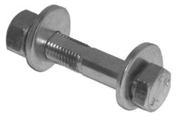
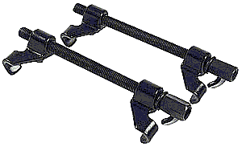

Go Home
Site Map
Go Home
Site Map
Strut safely
Warning! Improper handling of shocks and struts can cause serious injury or death. Never Heat, Cut, Drill, Beat, or Bend Shocks or Struts. Depending on type, gas shocks/struts contain Nitrogen gas at pressure ranging from 60-500 PSI (4-30 BAR). However even non-gas shocks can rupture and spray hot oil if over heated.
Warning! Because of the large array of spring compressors available it is not possible to describe every detail of their use. Make absolutely certain you understand your compressor fully before use. Use all safety devices originally included with your compressor. Addition safety equipment may be required.
Did he say don't bend them?
Yeah, I figured you'd get a jolt from that. Some alignment shops have been known to use a bending process to align certain strut systems. The process should never be used on gas charged struts. In Fiero this should not be needed since all aftermarket struts slotted for camber adjustment. (If you ever need a caster adjustment on a Fiero rear then something major is wrong.) You should also be using "cam bolts" when they are installed. These bolts allow easy adjustment of the camber.
How long will this take?
While shocks are usually an afternoon project, struts should not be planned that way.
Do not expect to walk into a parts store and walk out with all the stuff you need. The Cam Bolts and boots/bumpers will likely need to be special ordered. Many stores don't even have the shocks and/or the struts in stock. Most of the parts can be received within 24-48 hours. Start buying parts a week before you plan to do the job and plan to buy from multiple sources. I got my cam bolts and spring compressor from Advance Auto and the shocks/struts from Pep Boys.
The actual work will depend mainly on the condition of your present hardware. If you don't run into problems you can have the struts changed in about 3-4 hours. (Faster with air tools...)
You also need to plan to change the shocks in most cases. That's another 2-4 hours if nothing goes wrong. (Doesn't make much sense to replace the struts and leave bad shocks on it.) There are some shock installation tips at the end of this article if you need them.
Plus the time it takes to have it aligned after everything is done.
Will this mess up my alignment?
Absolutely. While there are methods and tools that will let you set the camber close to where it started, the car MUST be aligned after changing struts. Small alignment errors will usually have a large effect on Fiero handling and tire wear.
Do Not drive the car any more than you need to get to the alignment shop. Even if the car feels ok. Your tires can wear very quickly if the alignment is even a little off.
(Changing shocks only usually won't upset the alignment much if at all.)
How can I get the alignment somewhat close?
This is the method I used to set my new struts. This is just to get it reasonably close. It's not intended to be any type of permanent thing. (When we put it on the rack, I ended up with one tire's camber ok but the other was still off some.)
You need a level. A dial type one is best but a bubble will work in a pinch. I used a regular magnetic bubble level to do mine. There are nice levels made specifically for this job. Check the tool suppliers.
- Jack the car, lower it onto a jack stand and remove the wheel.
- Reinstall 2 lug nuts to hold the brake rotor tight to the hub.
- Place the level on the brake rotor. Make sure it's flat against whatever area of the rotor you use. I put it against the mounting flange and not the actual rotor.
- Use a piece of masking tape to mark the pointer location or one end of the bubble.
- Install the new strut. DO NOT change the position of the car while you work.
- Adjust the new strut until the level returns to the previously marked position.
- Hold that position while tightening the bolts.
This should get you close but you still need a full alignment. There's enough variation between the old and new that even if you got it exactly right with the level, the alignment is probably still off once the tire is back on.
I can't get the big bolts loose!
You need a Big wrench or cheater bar for the bolts at the bottom of the strut. These bolts are Class 10.9 (SAE Grade 8) or higher and are torqued to around 190 pound feet. Add some rust to that and it can take allot of force to undo them.
If the bolts are badly rusted, it can also help if you support the control arm with a bottle jack. Make sure you place the support where it can't bend the arm or break off the grease fitting on the ball joint. The bottle jacks work well because you can snug them up but still easily release them once the strut is loose. That gives you allot more control than blocking material.
Where do I get the cam bolts for the new struts?
Notice: The Monroe AK-30 bolt kit no longer contains the cam head bolt.
I believe Moog and some others still offer a suitable bolt product. Some kits cost significantly more than the AK-30 Kit so shop around. That said... there may be some old stock of the AK-30 kit running around some places. It's worth a try if you can find them.
One source is Monroe part number AK-30. Use the search by part number function available at most online sources. Search for AK30. (NAPA online lists some but they cost twice as much.) I could not find any parts stores that had them in stock. It took about 2 days to get them thru Advance Auto.
2000RagTop reports:
I found the Cam Strut Bolts at Napa. Part Number 264-3609 cost was $8.89 ea. 2 needed.

There are two styles of cam bolt. Both have a cam permanently attached to the bolt head. Some have a second cam that slides over the threads.
It does not matter which kind you use. The second cam really isn't needed and because the bolt has a flat side it allows much more trash into the nut that will cause corrosion. Unfortunately this is the only sort you can get now...
Can I install the new struts without the cam bolts?
Technically Yes, but don't. The alignment people will hate you and may even refuse to do the work if the cam bolts aren't installed. You'll usually get a better alignment with the cam bolts than without.
The cam bolts allow the tech to easily set and hold the camber adjustment while tightening the nut. Without the bolts, the tech has to muscle the adjustment which will likely move as he tightens the nut.
What about getting and using Spring Compressors?
Warning: Do Not use an impact wrench on the compressor!
It takes surprisingly little effort to compress the springs. You don't need an impact wrench and in fact you can damage most compressors using one. I just used a standard 1/2 drive ratchet and extension. Any air ratchet would work just fine if you've got one.
Nearly any tools supplier and most parts stores have them. Autozone, Pep Boys, and some others may have loaner units you can sign out with a deposit.
I got mine at Advance Auto. It's an AmPro T70570 and was about $25 plus tax. This one has nice wide jaws to grab the springs. I figure I'll only use it a few times so I didn't see any sense in buying an expensive unit. (That's it in the image.) This one also has 1/2 inch drive holes in the bolt heads. That means you just need a ratchet handle and extension to use it.
I definitely prefer screw compressors with wide jaws on both ends. Wide jaws reduce the spring's tendency to bow out in the middle.
One thing that's a must with screw type compressors... make sure you lube the thrust washer and threads EVERY TIME YOU USE THEM! This will make them last far longer and reduce the chance of the threads stripping when the thing is under load. It also reduces the effort to operate them.
On the other hand, clean away any dirt/grease/oil on the spring and the jaws to prevent the compressor from slipping. (The first time you use a new screw compressor, grease the bolthole in the "head end" jaw.)
I don't want to mess with a compressor...
You can take all the stuff to allot of service centers and parts stores to have the springs and stuff moved to the new struts. Cost of that varies by store. This will reduce your work to removing and installing only the strut assembly.
I figured for the cost of the AmPro compressor I may as well do it myself and save running to/from the parts store and the wait for them to do it. Even if a shop costs less, that way still takes allot of time.
Any tricks on disassembly?
Don't worry if the compressors are at an angle relative to the strut. You want the jaws to fully seat onto the spring. Just let the compressor align to the spring wire the way it wants to. Most strut spring compressors will tend do this and if you fight them they will likely slip under load.
Also, try to keep the drive screw threads from rubbing the spring. If you can't avoid that then grease the spot where the spring hits the screw to minimize damage to the threads.
Some compressors may fit better "head down" relative to the strut. I found using the compressor head down also made reassembly easier later on.
If you can't remove the top nut, cut it with a Dremel tool and a heavy-duty cutting wheel or some other kind of saw. (No Torches! Heat will damage the top plate!) Whack the split with a chisel or center punch to spread the nut and it should come right off. (Support the nut when you hit it! You don't want to rattle the spring and risk slipping the compressor.)
The new struts should come with new top nuts. Use them. The threads aren't the same on every strut made. (My new struts had finer threads than the old ones.)
DO NOT leave a compressed spring unattended! If you run into a problem once the strut is apart, put the spring back on the strut and put the top plate and nut back on. This will help reduce the chance of flying parts while you figure out what is wrong.
Once the spring is compressed, treat it like a small bomb. Don't bang it around. You can never be 100% sure that it won't slip or a compressor part won't break. Handle it in a way that if things go wrong you won't get pinched or struck by the spring and other parts. That thing can easily remove fingers. Don't leave the spring compressed any longer than absolutely necessary.
Make sure all screw type compressors are 180 degrees apart on the spring. If the spring insists on bowing try moving the compressors a little and try again. (Bowing generally won't be a problem with wide compressor jaws.)
Be Extremely Careful! If that thing gets loose it can kill someone. The compressor will place hundreds of pounds of load on that spring. The spring and/or compressor can fly with tremendous force. (Yes, people have been injured and even killed by flying parts from accidents doing this kind of work.)
Compress the spring only enough to unload the strut pulse a few turns. The extra few turns should allow for slight differences between struts. You want to avoid adjusting the compressor unless the spring is trapped by the strut and top plate.
Strut Boots and/or Bumpers...
The strut bumper needs to be there. The dust sleeve/boot is semi optional. If you want the best life from your struts these need to be in good shape, especially on lowered vehicles. Struts can and will slam themselves and the top plate to pieces on lowered cars if the bumpers are missing. Even on stock vehicles the struts can slam going over large things like speed bumps.
Monroe, Gabriel, and others still list replacement boots and bumpers. Depending on the source, you may even be able to get various colors of boot. You may have to special order them.
Gabriel has nice boot/bumper sets. Theirs are a true bellows design and made to be sealed to the strut top.
Installation
Again, the new struts should have new top nuts. Use them. Make sure it's tight because you probably won't be able to torque them again later. (You need special tools for that once the strut is installed. There's no room for regular wrenches.)
Make sure the spring is correctly aligned on both perches. This can be a bit tricky. This part is easier if the strut is head down while you let off the compressors. That way every thing rests nicely against the top plate while you guide the spring to the lower perch.
Check the upper sections of the spring for wear. Coat areas that rub with silicone brake grease. (Brake grease won't wash out as easily.)
There's not much to reinstalling the assembly. It can help to have another person around. You can do it by yourself, it just awkward to get everything to line up at times.
I found it's easier to get it back together if you can get the long top stud started with a nut then the other two. (Don't forget the oval shaped reinforcing plates.) Once they are all started then get the big bolts in their holes. Go back up top and run all three nuts home.
Leave the nut that holds the vent grate bracket loose until you're done with the rest of the strut. Put the vent grate on the car, tighten the retainer screw(s), and then tighten the nut that holds the bracket. That way everything should line up in one try.
What are the best shocks/struts?
I don't think there is a best and I think in most settings it simply doesn't matter as long as you use an established brand of high quality gas charged product. Any shock/strut set you buy today will be considerably better than what was originally on the car, including whatever was used in WS6 cars. The better products are all gas charged and contain some type of road sensitive valve system.
The most important thing is that shocks and struts be treated as a matched set.
Example one, you don't want Monroe shocks mixed with Gabriel struts or that sort of thing. They would work safely, but the differences between brands could produce some subtle handling issues.
Example two, don't mix gas and non-gas products. This can have very unpredictable results. It's the shock equivalent of mixing radial and bias ply tires. You never quite know what you're gonna get or under what conditions a problem might show up. The car should be safe but handling won't be the best.
Keep in mind that gas shock/struts will affect ride height and spring rate. The car will usually sit a little higher with fresh units in place.
Product Review
The AmPro spring compressor I used is quite well made for the price. It doesn't have additional hardware to hold onto the spring like some others. It doesn't really need anything else. I found the tool to be very well made and very stable. The wide jaws grab firmly on the spring and have no tendency to migrate during use. The drive screws have hex heads but the 1/2 inch drive holes eliminate the need to use a socket to turn them.
One thing I thought was odd... The compressor screws came with lock washers on them. I'm not sure if that was designed that way or someone simply put the wrong ones on at the factory. It didn't seem to matter since the washer can't lock. (You'll see what I mean if you use it.) I used it as supplied this time. Before future use I'll change those to regular flat washers just to prevent wear on the bolts or jaws.
I went with Gabriel Pro Ryder gas shocks and Gas Ryder struts, both with VST. They provide good ride and handling from my sport optioned Fiero. The sport version already has a pretty stiff suspension. As a daily driver I didn't want it any stiffer because of the shocks/struts. I'm very happy with the results. They are made in U.S.A. for people who need that info.
The Monroe AK30 cam bolt kits are serious hardware. The bolts exceed grade 10 and are the single cam type that I prefer. They worked just fine with the Gabriel struts and should work just as well with any other brand.
Links
Monroe has some interesting explanations of how shocks and struts work. Not much product data. They have you call an 800 number for part number lookups.
Gabriel, a division of ArvinMeritor, has better product data and an online catalog. You can see a picture of their nice Strut Cushion™ boot/bumper on the products page. The also explain how VST works. (ArvinMeritor also makes Purolator and Maremont products.) That strut cushion looks like it should fit most struts regardless of brand but it may not work with coil over conversions and custom stuff like that..
AmPro has a web site for what it's worth... There's not much info there. They may not be the "pro" grade stuff like Snap-on, S-K, etc, but they will do well for good tools on a budget. I've had their serpent belt tool for a while. Who wants to spend a fortune on a tool for occasional use? I figure I'll use a spring compressor about once or twice a decade...
KYB for those interested... They have nice stuff and it's allot of it is competitive with most other brands. If you're into racing these should do well for allot less than Koni. They've also got an explanation of what the top assembly on FWD struts does and how it screws up when it's bad. (Fiero top plate is just a bushing. Essentially it's either good or bad and is pretty easy to spot.)
Koni since we're on the subject... They explain allot of handling terms and so on in addition to product info.
Shock it to me
Before starting to remove the shock, set up a bottle jack under the tip of the Lower Control Arm. Make sure the jack doesn't load on the grease fitting in the ball joint. You'll need the jack to unload the existing shock and hold up the LCA so you can install the new one.
If the bottom bolt is stuck in the sleeve, twist it around until you find the seam in the sleeve. (Most shocks have a rolled sleeve.) Center punch on or right next to the seam to split it open. That usually will unload it enough to let go of the bolt. It will also let in penetrating oil.
If it's not already loose, the sleeve will usually tear loose from the bushing fairly easy. Just be careful. It can snap a wrench pretty far if you don't have a good grip.
Coat the bolt and the inside of the sleeve with grease or anti seize to prevent the same problem in future. Anti seize the top bolts too.
Replacement bolts for shocks don't have to be anything special any bolt that fits will work.